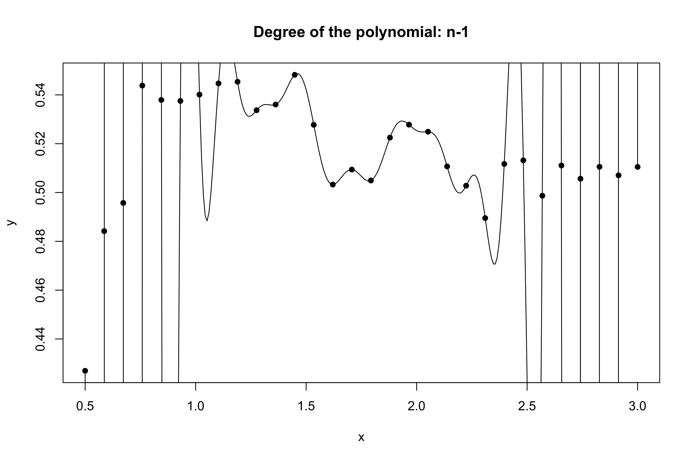

Optimism, Conflicts, and Trade-offs
Data Mining - CdL CLAMSES
Tommaso Rigon
Università degli Studi di Milano-Bicocca
Homepage
 “Pluralitas non est ponenda sine necessitate.” William of Ockham
“Pluralitas non est ponenda sine necessitate.” William of Ockham
In this unit we will cover the following topics:
- Bias-variance trade-off
- Cross-validation
- Information criteria
- Optimism
You may have seen these notions before…
…but it is worth discussing the details of these ideas once again, with the maturity you now have in a M.Sc.
They are the foundations of statistical learning.
Yesterday’s data
Let us presume that yesterday we observed n = 30 pairs of data (x_i, y_i).
Data were generated according to Y_i = f(x_i) + \epsilon_i, \quad i=1,\dots,n, with each y_i being the realization of Y_i.
The \epsilon_1,\dots,\epsilon_n are iid “error” terms, such that \mathbb{E}(\epsilon_i)=0 and \text{var}(\epsilon_i)=\sigma^2 = 10^{-2}.
Here f(x) is a regression function (signal) that we leave unspecified.
Tomorrow we will get a new x_{n+1}. We wish to predict Y_{n+1} using \mathbb{E}(Y_{n+1}) = f(x_{n+1}; \beta).
Polynomial regression
The function f(x) is unknown, therefore it should be estimated.
A simple approach is using the tools of Unit A.1, such as polynomial regression: f(x) = f(x; \beta) = \beta_1 + \beta_2 x + \beta_3 x^2 + \cdots + \beta_p x^{p-1}, namely f(x) is approximated with a polynomial of degree p-1 (i.e. Taylor expansions).
This model is linear in the parameters, therefore we can use ordinary least squares.
How do we choose the degree of the polynomial p - 1?
Without a clear guidance, in principle any value of p \in \{1,\dots,n\} could be appropriate.
Let us compare the mean squared error (MSE) on yesterday’s data (training) \text{MSE}_{\text{train}} = \frac{1}{n}\sum_{i=1}^n\{y_i -f(x_i; \hat{\beta})\}^2, or alternatively R^2_\text{train}, for different values of p…
Yesterday’s data, polynomial regression
Yesterday’s data, goodness of fit


Yesterday’s data, polynomial interpolation (p = n)
Yesterday’s data, tomorrow’s prediction
The MSE decreases as the number of parameter increases; similarly, the R^2 always increases as a function of p. It can be proved that this always happens in linear models.
One might be tempted to let p as large as possible to make the model more flexible…
Taking this reasoning to the extreme would lead to the choice p = n, so that \text{MSE}_\text{train} = 0, \qquad R^2_\text{train} = 1, i.e. an apparently perfect fit. This procedure is called interpolation.
However, we are not interested in predicting yesterday data. Our goal is to predict tomorrow’s data, i.e., given x_{n + i}, to predict Y_{n + i}, for a new set of m = 30 points: (x_{n+1}, y_{n+1}), \dots, (x_{n+m}, y_{n + m}) \ \longrightarrow \ \hat{y}_{n+i} = \mathbb{E}(Y_{n+i}) = f(x_{n+i}; \hat{\beta}), for i=1,\dots,m, where \hat{\beta} is obtained using yesterday data.
Remark. Tomorrow’s data Y_{n+1},\dots, Y_{n+m} follows the same scheme of yesterday’s data.
Tomorrow’s data, polynomial regression

Tomorrow’s data, goodness of fit


☠️ - Orthogonal polynomials and numerical difficulties
Methods for model selection
Summary and notation
As in the previous example, we consider two set of random variables:
- The training set Y_1,\dots, Y_n, whose realization is y_1,\dots,y_n.
- The test set Y_{n+1},\dots,Y_{n +m}, whose realization is y_{n+1}, \dots, y_{n + m}.
We assume that the covariates \bm{x}_i = (x_{i1},\dots,x_{ip})^T are deterministic, to simplify the notation and the discussion. This can be relaxed, see e.g. Chapter 7 of HTF.
An important assumption is that the random variables Y_i are independent. In particular: Y_i = f(\bm{x}_i) + \epsilon_i, \quad i=1,\dots,m, where \epsilon_1,\dots,\epsilon_m are iid “error” terms with \mathbb{E}(\epsilon_i)=0 and \text{var}(\epsilon_i)=\sigma^2.
The training data is used to estimate a function of the covariates \hat{f}(\bm{x}_i) which should predict well the corresponding response Y_i.
We hope that our predictions works well on the test set, which can be used to evaluate the quality of the estimated \hat{f}(\bm{x}_i).
The average prediction error
A measure of quality for the predictions is the so-called expected prediction error: \text{Err} = \mathbb{E}(\text{MSE}_\text{test}) = \mathbb{E}\left[\frac{1}{m} \sum_{i=1}^m \mathscr{L}\{Y_{n + i}; \hat{f}(\bm{x}_{n + i})\}\right], where \mathscr{L}\{Y_i; \hat{f}(\bm{x}_i)\} is a loss function.
The expectation is taken with respect to traning random variable Y_1,\dots,Y_n, implicitly appearing in \hat{f}(\bm{x}), and the new data points Y_{n+1},\dots,Y_{n+m}.
The expected prediction error is measuring the average “discrepancy” between the new data points and the corresponding predictions.
Examples of loss functions for regression problems Y \in \mathbb{R} are:
- The quadratic loss \mathscr{L}\{Y_i; \hat{f}(\bm{x}_i)\} = \{Y_i - \hat{f}(\bm{x}_i)\}^2, leading to the MSE.
- The absolute loss \mathscr{L}\{Y_i; \hat{f}(\bm{x}_i)\} = |Y_i - \hat{f}(\bm{x}_i)|, leading to the MAE.
Quadratic loss and the mean squared error
Error decomposition (reducible and irreducible)
Under a quadratic loss, each element of the expected prediction error admits the following decomposition \begin{aligned} \mathbb{E}\left[\{Y_i - \hat{f}(\bm{x}_i)\}^2\right] &= \mathbb{E}\left[\{f(\bm{x}_i) + \epsilon_i - \hat{f}(\bm{x}_i)\}^2\right] \\ & = \mathbb{E}\left[\{f(\bm{x}_i) - \hat{f}(\bm{x}_i)\}^2\right] + \mathbb{E}(\epsilon_i^2) + 2 \: \mathbb{E}\left[\epsilon_i \: \{f(\bm{x}_i) - \hat{f}(\bm{x}_i)\}\right]\\ & = \underbrace{\mathbb{E}\left[\{\hat{f}(\bm{x}_i) - f(\bm{x}_i)\}^2\right]}_{\text{reducible}} + \underbrace{\sigma^2}_{\text{irreducible}}, \end{aligned} recalling that \mathbb{E}(\epsilon_i^2) = \text{var}(\epsilon_i) = \sigma^2 and for any i = n+1,\dots,n+m (test set).
Reducible and irreducible errors
We would like to make the mean squared error as small as possible, e.g. by choosing an “optimal” degree of the polynomial p-1 that minimizes it.
Let us recall the previous decomposition \mathbb{E}\left[\{Y_i - \hat{f}(\bm{x}_i)\}^2\right] = \underbrace{\mathbb{E}\left[\{\hat{f}(\bm{x}_i) - f(\bm{x}_i)\}^2\right]}_{\text{reducible}} + \underbrace{\sigma^2}_{\text{irreducible}}, \quad i=n+1,\dots,n + m.
The best case scenario is when the estimated function coincides with the mean of Y_i, i.e. \hat{f}(\bm{x}_i) = f(\bm{x}_i) = \mathbb{E}(Y_i), but even in this (overly optimistic) situation, we would still commit mistakes, due to the presence of \epsilon_i (unless \sigma^2 = 0). Hence, the variance \sigma^2 is called the irreducible error.
Since we do not know f(\bm{x}_i), we seek for an estimate \hat{f}(\bm{x}_i) \approx f(\bm{x}_i), in the attempt of minimizing the reducible error.
Bias-variance trade-off
In many books, including A&S, the starting point of the analysis is the reducible error, because it is the only one we can control, e.g. by selecting the “optimal” p.
The reducible error measures the discrepancy between the unknown function f(x) and its estimate \hat{f}(\bm{x}).
What follows is the most important result of this unit.
Bias-variance decomposition
For any covariate value \bm{x}, it holds the following well-known decomposition: \mathbb{E}\left[\{\hat{f}(\bm{x}) - f(\bm{x})\}^2\right] = \underbrace{\mathbb{E}\left[\{\hat{f}(\bm{x}) - f(\bm{x})\}\right]^2}_{\text{Bias}^2} + \underbrace{\text{var}\{\hat{f}(\bm{x})\}}_{\text{variance}}.
The expected prediction error
Summarizing, the expected prediction error can be decomposed as \begin{aligned} \text{Err} = \sigma^2 + \frac{1}{m}\sum_{i=1}^m\mathbb{E}\left[\{\hat{f}(\bm{x}_{n+i}) - f(\bm{x}_{n+i})\}\right]^2 + \frac{1}{m}\sum_{i=1}^m\text{var}\{\hat{f}(\bm{x}_{n+i})\}. \end{aligned}
In ordinary least squares the above quantity can be computed in closed form.
Indeed, each element of the bias term equals \mathbb{E}\left[\{\hat{f}(\bm{x}_{n+i}) - f(\bm{x}_{n+i})\}\right] = \bm{x}_{n+i}^T(\bm{X}^T\bm{X})^{-1}\bm{X}^T\bm{f} - f(\bm{x}_{n+i}). where \bm{f} = (f(\bm{x}_1),\dots,f(\bm{x}_n))^T. Note that if f(\bm{x}) = \bm{x}^T\beta, then the bias is zero.
Moreover, each element of the variance term equals \text{var}\{\hat{f}(\bm{x}_{n+i})\} = \sigma^2 \bm{x}_{n+i}^T (\bm{X}^T\bm{X})^{-1}\bm{x}_{n+i}.
If we knew f(\bm{x}) and \sigma^2, then the expected prediction error could be calculated…
If we knew f(x)…

Bias-variance trade-off
When p grows, the mean squared error first decreases and then it increases. In the example, the theoretical optimum is p = 6 (5th degree polynomial).
The bias measures the ability of \hat{f}(\bm{x}) to reconstruct the true f(\bm{x}). The bias is due to lack of knowledge of the data-generating mechanism. It equals zero when \mathbb{E}\{\hat{f}(\bm{x})\} = f(\bm{x}).
The bias term can be reduced by increasing the flexibility of the model (e.g., by considering a high value for p).
The variance measures the variability of the estimator \hat{f}(\bm{x}) and its tendency to follow random fluctuations of the data.
The variance increases together with the model complexity.
It is not possible to minimize both the bias and the variance, there is a trade-off.
We say that an estimator is overfitting the data if an increase in variance comes without important gains in terms of bias.
Traning, test, and cross-validation
But since we do not know f(x)…
Mean squared error
Training and test
Cross-validation
Leave-one-out cross-validation (LOO-CV)

Information criteria
Optimism

Comments and remarks
The mean squared error on tomorrow’s data (test) is defined as \text{MSE}_{\text{test}} = \frac{1}{m}\sum_{i=1}^m\{y_{n +i} -f(x_{n + i}; \hat{\beta})\}^2, and similarly the R^2_\text{test}. We would like the \text{MSE}_{\text{test}} to be as small as possible.
For small values of p, an increase in the degree of the polynomial improves the fit. In other words, at the beginning, both the \text{MSE}_{\text{train}} and the \text{MSE}_{\text{test}} decrease.
For larger values of p, the improvement gradually ceases and the polynomial starts to follow random fluctuations in yesterday’s data which are not observed in the new sample.
An over-adaptation to yesterday data is called overfitting, which occurs when the training \text{MSE}_{\text{train}} is low but the test \text{MSE}_{\text{test}} is high.